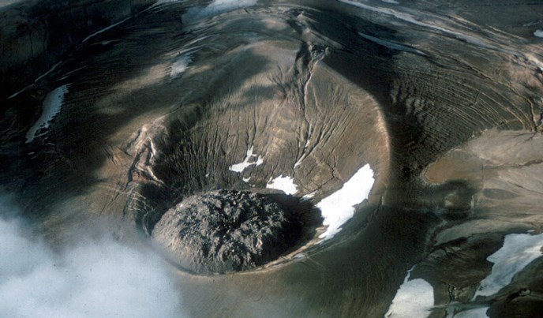

Top 2. Novarupta(1912)

Description
is a volcano that was formed in 1912, located on the Alaska Peninsula on a slope of Trident Volcano in Katmai National Park and Preserve, about 290 miles (470 km) southwest of Anchorage. Formed during the largest volcanic eruption of the 20th century, Novarupta released 30 times the volume of magma of the 1980 eruption of Mount St. Helens.
Eruption History
The 1912 eruption that formed Novarupta was the largest to occur during the 20th century. It began on June 6, 1912, and culminated in a series of violent eruptions. Rated a 6 on the volcanic explosivity index, the 60-hour-long eruption expelled 3.1 to 3.6 cubic miles (13 to 15 km3) of ash, thirty times as much as the 1980 eruption of Mount St. Helens. The erupted magma of rhyolite, dacite, and andesite resulted in more than 4.1 cubic miles (17 km3) of air fall tuff and approximately 2.6 cubic miles (11 km3) of pyroclastic ash-flow tuff.[11] During the 20th century, only the 1991 eruption of Mount Pinatubo in the Philippines and the 1902 eruption of Santa María in Guatemala were of comparable magnitude; Mount Pinatubo ejected 2.6 cubic miles (11 km3) of tephra, and Santa María just slightly less.